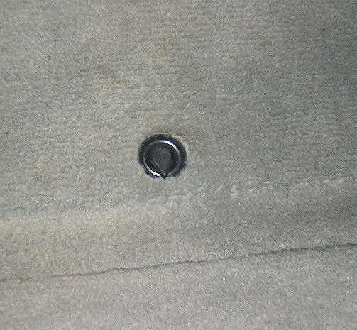
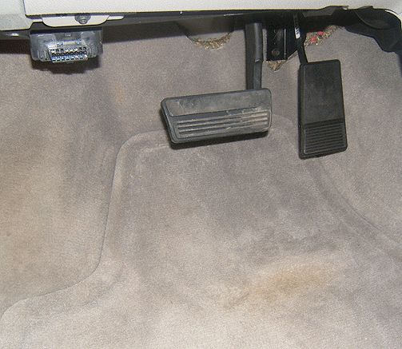

Interior - Proper Use of Floor Mats
INFORMATIONBulletin No.: 10-08-110-001
Date: March 30, 2010
Subject: Information on Proper Use of Floor Mats
Models:
2011 and Prior GM Passenger Cars and Trucks (Including Saturn)
2003-2009 HUMMER H2
2006-2010 HUMMER H3, H3T
2005-2009 Saab 9-7X
GM's carpeted and all-weather (rubber) floor mats are especially designed for use in specific GM vehicles. Using floor mats that were not designed for the specific vehicle or using them incorrectly may cause interference with the accelerator or brake pedal. Please review the following safety guidelines regarding proper driver's side floor mat usage with the customer.
Warning
If a floor mat is the wrong size or is not properly installed, it can interfere with the accelerator pedal and/or brake pedal. Interference with the pedals can cause unintended acceleration and/or increased stopping distance which can cause a crash and injury. Make sure the floor mat does not interfere with the accelerator or brake pedal.
- Do not flip the driver's floor mat over (in an effort to keep the floor mat clean)
- Do not place anything on top of the driver's floor mat (e.g. carpet remnant, towel)
- Do not place another mat on top of the driver's floor mat (e.g. do not place all-weather rubber mats over carpeted floor mats)
- Only use floor mats that are designed specifically for your vehicle
- When using replacement mats, make certain the mats do not interfere with the accelerator or brake pedal before driving the vehicle


If your vehicle is equipped with a floor mat retaining pin(s) or clip(s), make certain the mat is installed correctly and according to the instructions.


After installing floor mats, make certain they cannot move and do not interfere with the accelerator or brake pedals.

Disclaimer